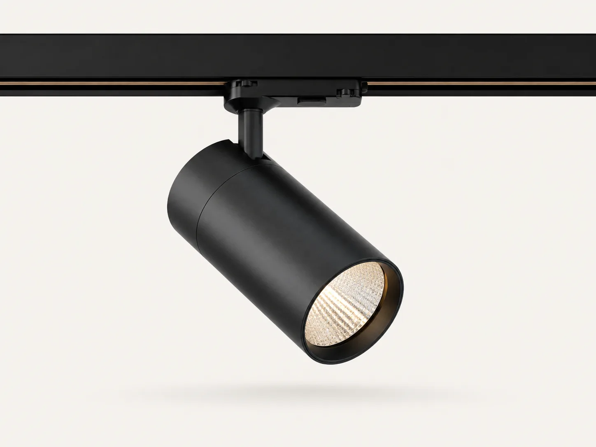

01 / AIM
Track Spotlight
ST-TRK10–30 W15° / 24° / 36°Black / White
Adjustable directional light for changing retail, gallery and display programs.
CCT3000 / 4000 / 5000 K
CRI80+ / 90+ concept
ControlOn/Off / dimming option
ReferenceST-TRK-[W]-[B]-[K]-[F]